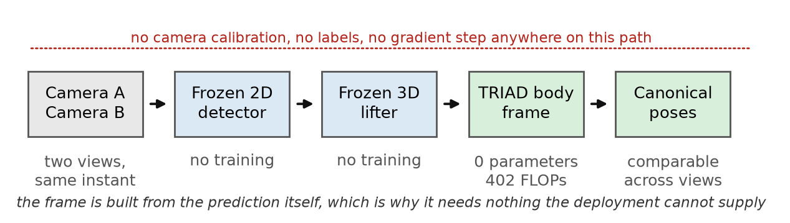
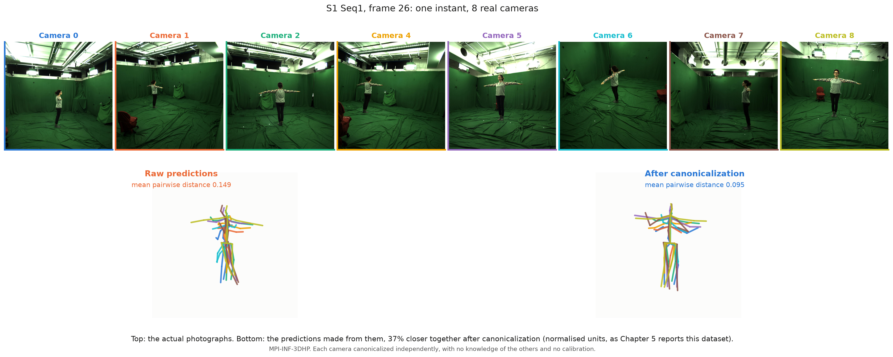
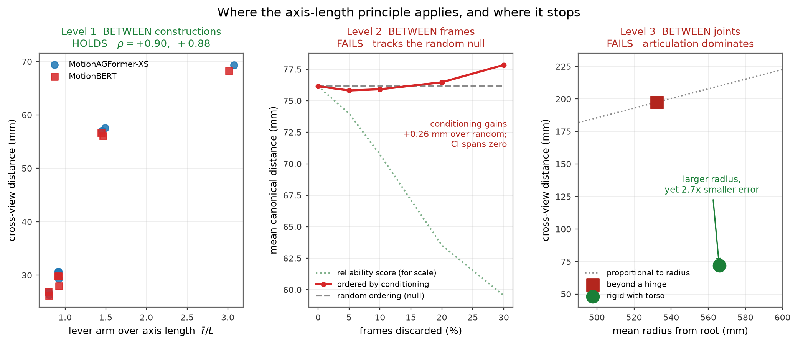

A monocular estimator predicts the skeleton in the observing camera's frame. Two cameras, same person, same instant — two different sets of numbers.
Gait analysis across sessions, sports across camera positions — every one of them needs a shared frame first.

Steps 1–3 are frozen and unmodified. Step 4 is mine: rebuild the coordinate frame from the person's own hips and torso. Zero trained parameters, 402 FLOPs per frame.

Top: the actual photographs, MPI-INF-3DHP. Bottom: the predictions made from them — raw on the left, canonicalized on the right. No camera knows about the other seven.
Each camera canonicalized independently — no calibration, and no knowledge of the other seven. The quantitative result is measured on held-out Human3.6M, two slides on.
In words: the frame is built out of the body itself. Move the camera and the whole prediction turns — but the frame, being made of the same joints, turns by exactly the same amount. Measuring the pose in that frame divides the turn out on both sides.
| Base MotionAGFormer-XS | + our canonicalization | |
|---|---|---|
| MPJPE against ground truth | 45.149 mm | 45.149 mm — unchanged |
| Cross-view distance | 372.7 mm | 93.4 mm |
| Pairs improved | — | 179 / 180 |
| Trained parameters | 2.2 M, frozen | 0 added |
| Same, on MotionBERT | — | −75.8%, 180 / 180 |
Kabsch-aligning each pose onto one fixed reference skeleton is also training-free, label-free, calibration-free and single-view.
| Cross-view distance | Anatomical frame | Kabsch-to-template |
|---|---|---|
| MotionAGFormer-XS | 93.4 mm | 57.5 mm |
| Pairs won | 0 / 180 | 180 / 180 |
| Actions won | 0 / 15 | 15 / 15 |
So I do not claim this is the best alignment algorithm. The question becomes: what is the contribution?

| Choosing between constructions | longer shoulder axis wins, 5.2% / 4.4%, both backbones | HOLDS |
| Which frame to trust | the multi-scale gain was circular by construction | FAILS |
| Which joint disagrees | slope 0.218 against a predicted band of [0.038, 0.073] | FAILS |
The principle holds at the construction level and does not extend reliably to the finer two.
| Initial hypothesis | Outcome |
|---|---|
| A novel canonicalization | It is TRIAD — Black, 1964. Prior art, cited. |
| Reliability predicts pose error | FALSIFIED five independent ways |
| Bone length predicts error | ρ = +0.492, then +0.098 on the second dataset. RETRACTED |
| Multi-scale per-limb frames | Scored on the joints they were built from. DEMOTED |
I found each of these myself, and reported them rather than removing them.
| Corruption | Anatomical frame | Kabsch, 17-joint |
|---|---|---|
| Clean | 53.45 mm | 43.3 mm |
| Distal joints corrupted | 53.45 mm — flat | → 92.3 mm |
| Anchor joints corrupted | → 337.9 mm | → 63.2 mm |
The frame reads four joints; Kabsch fits seventeen, so their errors respond differently to localised corruption. Measured on both backbones — and unlike the rule below, this holds without assuming any particular regime.
Not new, and all of it cited: the TRIAD construction (Black, 1964), the primary-axis rule (Shuster & Oh), the 2σ⁄L error propagation from biomechanics, Kabsch alignment.
| The transfer | Does classical rigid-body geometry survive on joints inferred by a network? |
| The boundary | It survives at construction level; it fails at both finer levels |
| The evidence | 372.7 → 93.4 mm, 179 of 180 pairs, replicated on a second backbone |
| The negatives | 17 pre-registered experiments; more than half failed; all reported |
Each of these is stated in the report, not only here.
| 17 | experiments pre-registered, in 16 documents — one covers two — with criteria committed to version control before each run |
| > half | failed their own criteria, and every one is reported |
| 304 | numerical claims re-derived from stored artifacts by an automated audit |
| 76 | unit tests, all passing |
| 16 / 16 | of those documents verified to precede their own results in git history |
| # | Experiment | Outcome |
|---|---|---|
| 1 | Test-time augmentation as an error signal | failed all three criteria |
| 2 | Multi-landmark frame | criterion failed |
| 3 | Conditioning-based abstention | passed on one backbone only |
| 4 | Joint-level radial law | slope outside the predicted band |
| 5 | Non-constructor recomputation | no pass criterion; lowered the headline |
| 6 | Kabsch-to-template baseline | baseline better, both backbones |
| 7 | Template ablation, three templates | part B prediction failed |
| 8 | Centring ablation | no pass criterion; baseline still wins |
| 9 | Per-action breakdown | no action favours the frame |
| 10 | Distal-joint corruption | crossover on one backbone only |
| 11 | Template proportion mismatch | baseline moves 0.12 mm |
| 12 | Anchor-joint corruption | established |
| 13 | Confidence-gated routing | met criteria; demoted to exploratory |
| 14 | 2D mis-detection sensitivity | established; criterion amended, disclosed |
| 15 | Every frame construction vs baseline | none beats the baseline |
| 16 | Asymmetric, one-sided corruption | crossover on one backbone only |
| 17 | Laterality control | refuted — effect has the wrong sign |
Ten failed their own criterion, three were established, four fixed no pass criterion in advance. Sixteen documents: 15 and 16 share one.
| Step | FLOPs |
|---|---|
| Root-centring the 17 joints | 51 |
| Two axis vectors | 6 |
| Normalisation | 27 |
| Cross products | 18 |
| Projecting the pose into the frame | 255 |
| Orthonormality check | 45 |
| Total per frame | 402 |
Stored in thesis_artifacts/cost/cost_benchmark.json; the audit checks it exactly.
For each predicted pose independently, find the rotation that minimises squared distance to one fixed reference skeleton, then apply it. Closed form via SVD — no training, no labels, no calibration, one view.
| Robustness tested | Result |
|---|---|
| Three unrelated reference skeletons | baseline wins under all three |
| Every centring convention tested | baseline wins under all |
| Reference scaled to child proportions | moves 0.12 mm — no matched template needed |
| All fifteen Human3.6M actions | baseline wins 15 / 15 |